Команда
Designer
Frontend-разработчик
Backend-разработчик
Переработал B2B-сценарий закрепления менеджеров за офисами банка: заменил линейный выбор на поиск, группировку по городам и понятный контроль выбранных отделений.
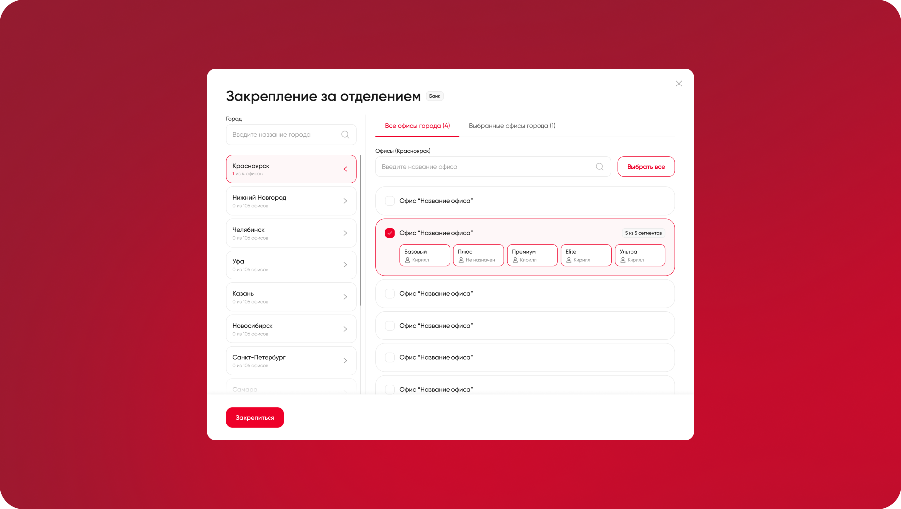
Продуктовый дизайнер
Я отвечал за переработку UX-сценария закрепления менеджеров за офисами: от анализа старого линейного процесса до проектирования новой логики с единым поиском, группировкой отделений по городам, массовым выбором и контролем выбранных офисов перед сохранением
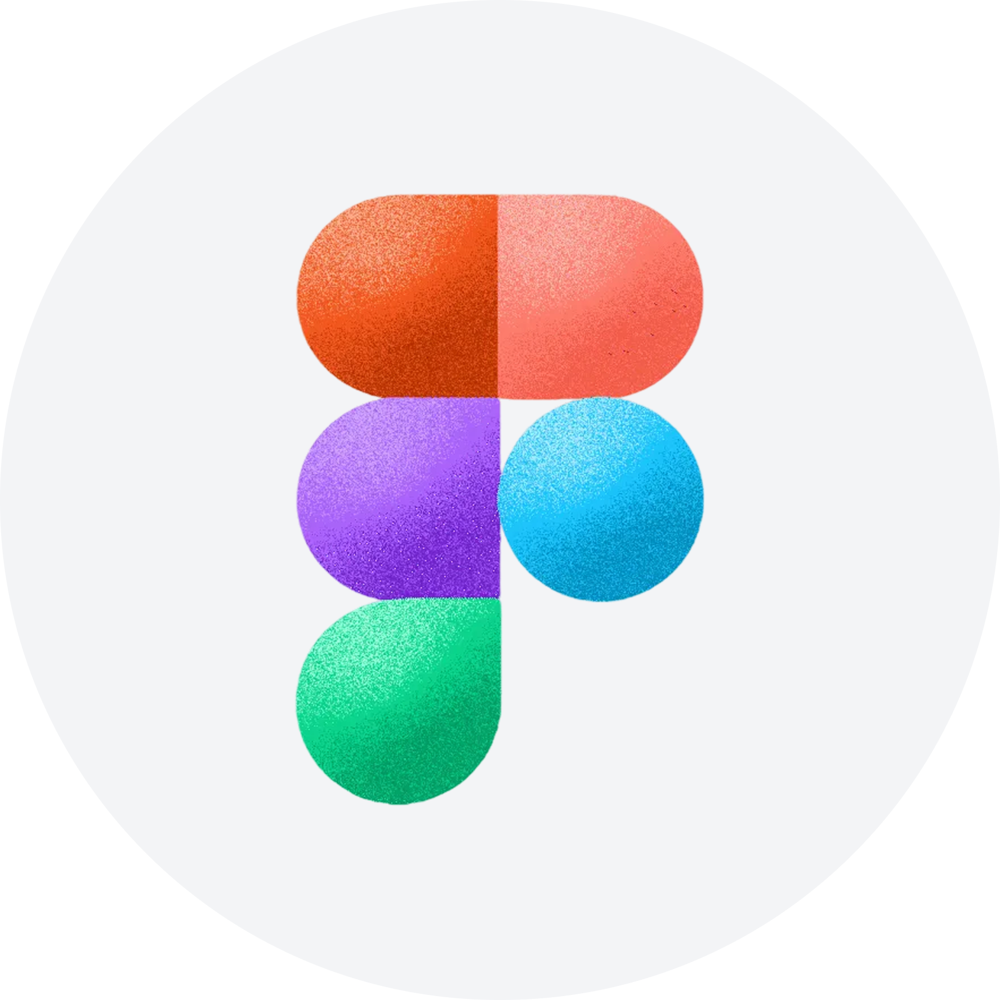
FigmaВ интерфейсе нужно было закреплять менеджеров за офисами банка
Раньше процесс работал только на уровне офисов: пользователь выбирал отделения, за которыми нужно закрепить менеджера. В новом интерфейсе появилась дополнительная сущность — сегменты. Теперь нужно было не просто выбрать офисы, а еще указать, с какими сегментами менеджер будет работать внутри выбранных отделений
Это усложняло сценарий: офисов может быть много, они распределены по городам, а закрепление часто выполняется сразу для группы отделений
Переработать процесс закрепления менеджеров за офисами и встроить в него новую сущность — сегменты
Нужно было сделать так, чтобы пользователь мог быстро найти нужные отделения, выбрать один или несколько офисов, массово закрепить менеджера за офисами города и затем настроить сегменты без потери контекста
На схеме процесс выглядел очень просто и логично.
В реальной работе это превращалось в длинный путь через справочник.
Сценарий был не про изучение справочника. Пользователь приходил с конкретной задачей: найти город, отделение, часть адреса или группу офисов
Чтобы дойти до нужного отделения, нужно было сначала выбрать город, затем искать офис в длинном списке, проверить выбранное и только потом перейти к сегментам
Когда офисов становилось много, появлялся бесконечный скролл, поиск зависел от выбранного уровня, а массовое закрепление требовало много ручных действий
Главная проблема была не в визуале,
а в самой логике процесса:
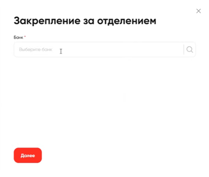
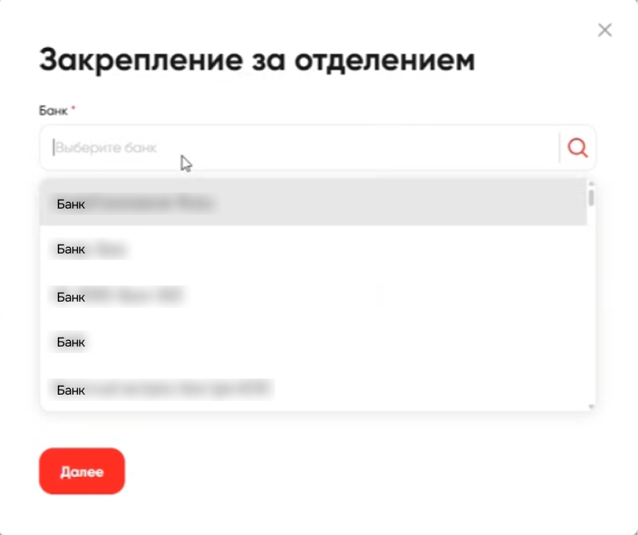
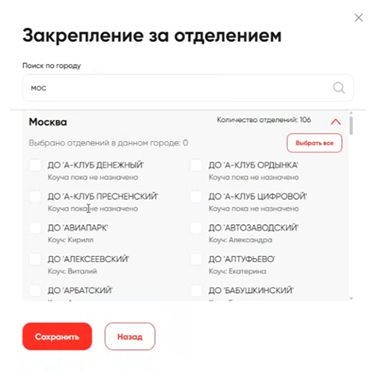
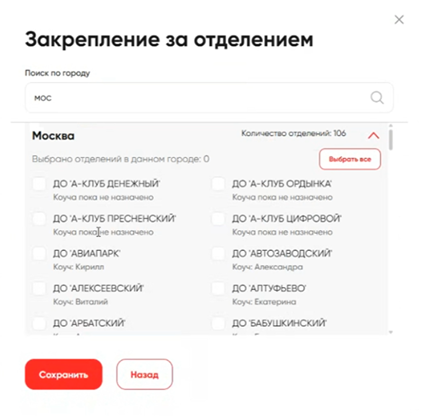
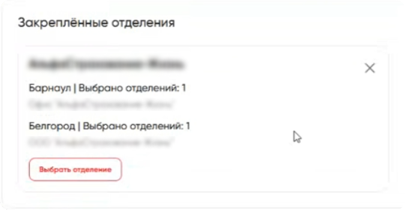
Я изменил сценарий с линейного выбора на конфигуратор закрепления.
Банк остается первым шагом, потому что закрепление выполняется внутри конкретной банковской сети. Но после выбора банка пользователь больше не проходит справочник по уровням. Вместо этого он сразу переходит к поиску и может ввести город, название отделения или часть адреса.
Решение
Сценарий начинается с поиска банка.
Так интерфейс снимает лишнюю навигацию: не нужно помнить, где именно лежит нужное отделение или с какого уровня начинать.
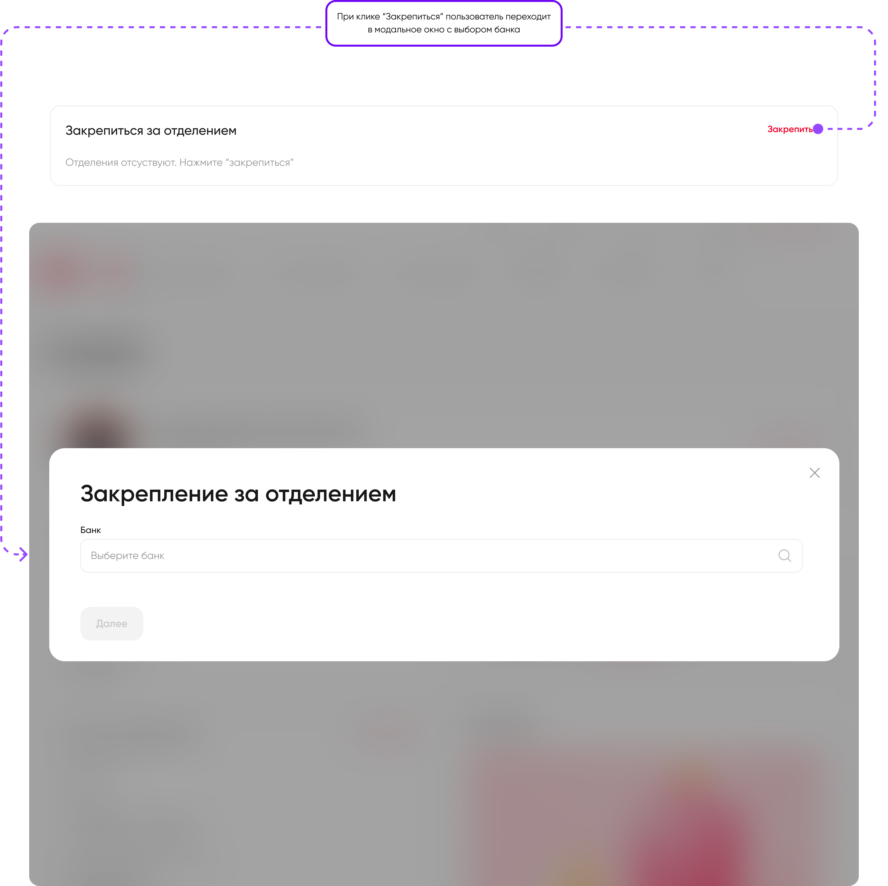
Решение
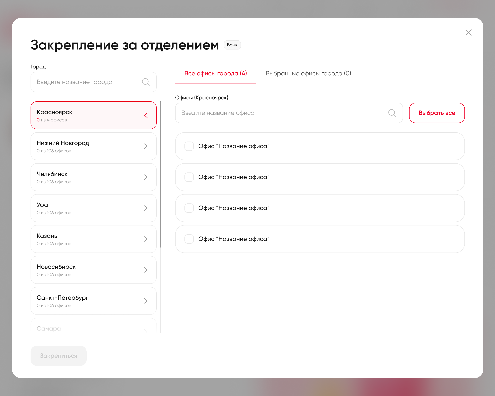
Плоский список отделений был заменен на структуру «город → отделения».
Город стал полноценной сущностью выбора: пользователь может выбрать один офис, несколько офисов или все офисы города одним действием.
Для города появились разные состояния: ничего не выбрано, выбрана часть отделений, выбраны все отделения.
Сегменты вынесены внутрь выбранного офиса, чтобы пользователь видел не только факт закрепления, но и то, с какими клиентскими группами связан менеджер.
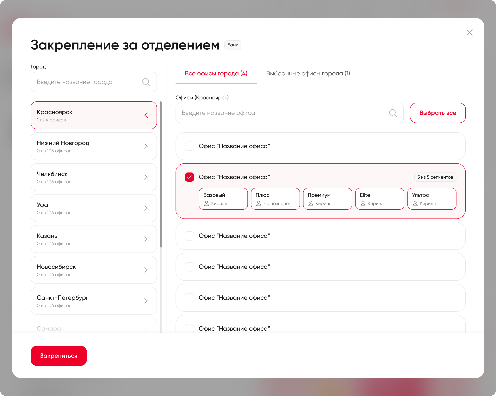
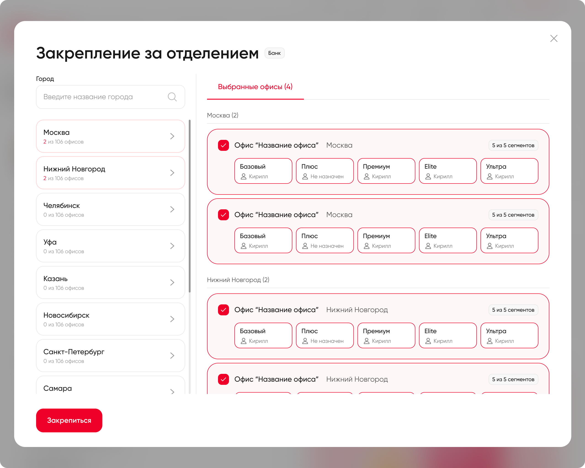
Чтобы пользователь не терял контекст, выбранные офисы вынесены в отдельное состояние.
Здесь он видит только те отделения, которые будут закреплены за менеджером, может проверить их по городам и при необходимости изменить сегменты прямо внутри карточки офиса.
Решение
После сохранения закрепления пользователь видит итоговую структуру в личном кабинете: банки, города и офисы, за которыми закреплен менеджер. Офисы сгруппированы по городам, а выбранные сегменты доступны через подсказку внутри карточки отделения.
Так пользователь может быстро проверить текущее закрепление, понять зону ответственности менеджера и при необходимости перейти к редактированию или открепить его от банка.
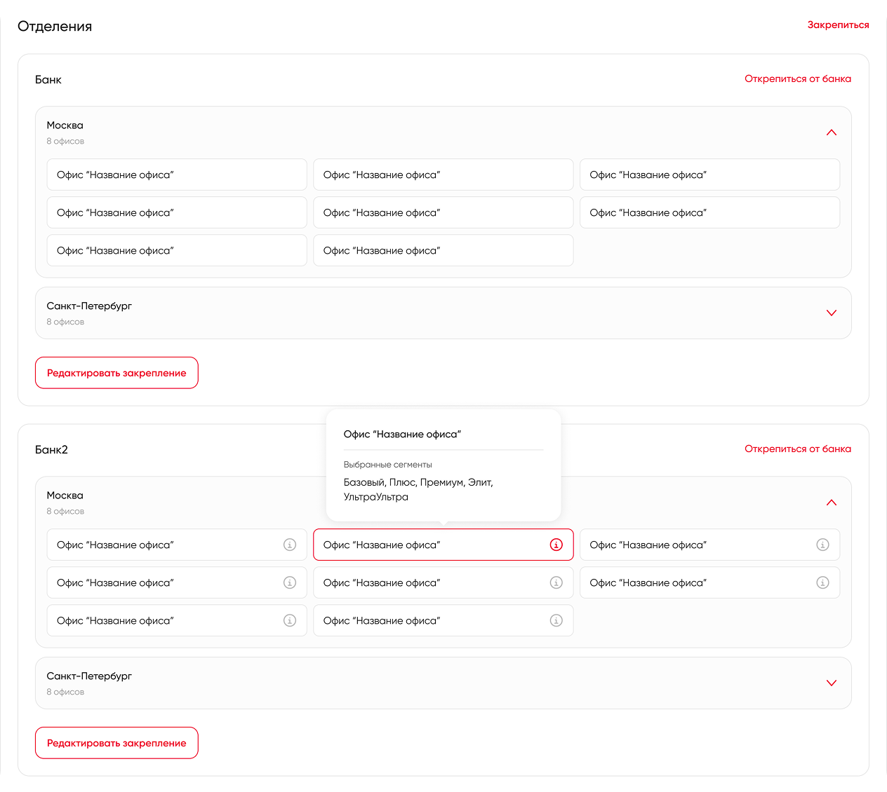
Линейный процесс через справочник. Пользователь выбирал банк, город, офисы и сегменты по очереди, а массовое закрепление требовало ручного выбора каждого офиса
Конфигуратор закрепления. Пользователь ищет по банку, городу или отделению, выбирает офисы по одному или массово и проверяет итог перед сохранением
Пользователь больше не проходит длинный справочник вручную: после выбора банка он может сразу искать город, отделение или часть адреса, выбирать офисы по одному или массово и проверять итоговый набор перед сохранением